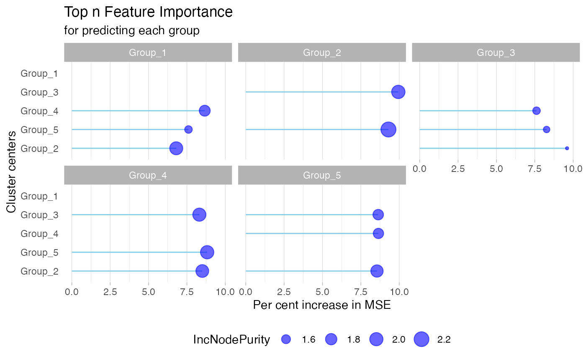

Get started
getstarted.RmdInstallation
You can either install MolPad with devtools,
# Install the package in R:
install.packages("devtools")
library(devtools)
install_github("KaiyanM/MolPad")or clone this repository to your local computer (for example, onto
./Github) for installing:
after that, load the package:
Before Input
We recommend carefully reviewing your data and considering applying
normalization (standardization, quantile normalization, log
transformation, …) and imputation (KNN, PMM, Mean/Median/Mode, …) to
address issues related to library size and missing data beforehead,
otherwise the pre_processing() function will default to
converting NAs to 0s.
Tips for normalization and imputation
To choose a normalization method, first consider your data distribution. Use Z-score normalization if your data is normally distributed, or log transformation and robust scaling if it’s skewed. If your analysis requires data within a specific range, like [0, 1], opt for Min-Max normalization. For datasets with outliers, robust scaling or rank normalization are better choices.
When selecting an imputation method, assess the amount and pattern of missing data. For a small amount of missing data, simple methods like mean, median, or mode imputation are effective. If missing data is related to other variables, consider more sophisticated approaches like Predictive Mean Matching or k-NN imputation. If computational resources are a concern, simpler imputation methods might be more practical, but if resources allow, more advanced methods can improve data quality.
If it’s hard to decide, you can always experiment with different methods and use cross-validation to compare their effectiveness. Let your choice be guided by domain knowledge and the specific requirements of your analysis to increase the quality of the following steps.
Data Format
Multi-omics: Yes or No
Our visualization pipeline starts with a pre-processing module that includes built-in functions to reshape data inputs into a standard format and streamline data preparation. Depending on the nature of your datasets, there are two primary conditions to consider:
If Your research object includes multi-omics measurements, we assume that you could provide them as a list of dataframes, where each collected for a different omics type. For example, you might have datasets for peptides, metabolites, and lipids. To combine them together into a standard long dataset where each row represents a feature, simply run the pre_process() function, which will conduct data preparation and yield the standard input format as demonstrated below.
If Your Datasets are not multi-omics, you can still utilize our dashboard as long as ensuring that your data inputs are reformatted into the standard longitudinal format. In this situation, you can manually assign the type column with any category label to describe major groups in the data, and input your data into the
pre_processing()module for data preparation only. In our case study, we utilized “Kingdom” as the type label column for the cheese data.
If your datasets are not multi-omics, you can simply apply it to our
dashboard by reformatting your data into the standard longitudinal
format. In this case, manually assign a category label to the
type column to represent the major groups. After that you
can still input your data into the pre_processing() module
for cleaning and preparation. In our case study, we used “Kingdom” as
the type label for the cheese datasets.
Data Format and Pre-process
In the figure, A, B, and C can represent datasets from different
sources or different aspects of measurements. Below are two examples of
what the input data might look like and how to transform it into the
required format through pre_process() modules.
If your input is a list of datasets:
Here is a list of datasets, each following the same format: they all have an ID column and identical column names.
str(fungal_dlist)
#> List of 3
#> $ :'data.frame': 149786 obs. of 12 variables:
#> ..$ ID : chr [1:149786] "grp1_1" "grp1_2" "grp1_6" "grp1_7" ...
#> ..$ D0_01 : num [1:149786] -0.33 -0.33 1.591 1.106 0.659 ...
#> ..$ D1_02 : num [1:149786] 0.628 0.628 3.087 3.618 2.843 ...
#> ..$ D2_03 : num [1:149786] -1.223 -1.223 0.846 1.178 1.435 ...
#> ..$ D3_04 : num [1:149786] -2.411 -1.808 1.239 1.753 0.258 ...
#> ..$ D4_05 : num [1:149786] -1.41 -1.18 2.05 1.64 1.21 ...
#> ..$ D5_06 : num [1:149786] -2.245 -2.309 0.83 1.64 0.395 ...
#> ..$ D6_07 : num [1:149786] -0.784 -1.125 2.758 2.888 2.516 ...
#> ..$ D7_08 : num [1:149786] -2.61197 -2.68724 0.42236 0.92846 0.00892 ...
#> ..$ D8_09 : num [1:149786] -0.951 -1.3 2.417 2.454 1.418 ...
#> ..$ D9_10 : num [1:149786] -1.91 -2.61 1.33 1.8 2.25 ...
#> ..$ D10_11: num [1:149786] -2.871 -3.417 1.101 0.619 1.275 ...
#> $ :'data.frame': 150 obs. of 12 variables:
#> ..$ ID : chr [1:150] "grp2_1" "grp2_2" "grp2_3" "grp2_4" ...
#> ..$ D0_01 : num [1:150] 0.947 1.012 0.156 0.31 0.138 ...
#> ..$ D1_02 : num [1:150] -1.616 -0.917 -1.581 -2.717 -2.578 ...
#> ..$ D2_03 : num [1:150] -2.4 -1.67 -2.31 -3.02 -3.66 ...
#> ..$ D3_04 : num [1:150] -0.5734 0.0336 -0.351 -1.3052 -1.737 ...
#> ..$ D4_05 : num [1:150] 0.662 0.854 1.002 0.12 -0.371 ...
#> ..$ D5_06 : num [1:150] -1.09 -1.28 -1.04 -1.82 -3.15 ...
#> ..$ D6_07 : num [1:150] -0.212 0.718 0.189 -0.627 -1.081 ...
#> ..$ D7_08 : num [1:150] 0.969 2.117 1.462 0.339 -0.038 ...
#> ..$ D8_09 : num [1:150] -0.712 0.43 -0.281 -1.297 -1.822 ...
#> ..$ D9_10 : num [1:150] -0.649 0.45 -0.124 -1.77 -1.962 ...
#> ..$ D10_11: num [1:150] -1.05 -0.85 -1.58 -1.91 -4.05 ...
#> $ :'data.frame': 369 obs. of 12 variables:
#> ..$ ID : chr [1:369] "grp3_1" "grp3_2" "grp3_3" "grp3_4" ...
#> ..$ D0_01 : num [1:369] -0.918 -2.112 -1.372 -0.4 -1.75 ...
#> ..$ D1_02 : num [1:369] -1.219 -3.502 -1.504 -0.615 -2.11 ...
#> ..$ D2_03 : num [1:369] -0.542 -2.324 -0.592 0.161 -1.342 ...
#> ..$ D3_04 : num [1:369] -0.101 -1.495 0.1 0.603 -1.058 ...
#> ..$ D4_05 : num [1:369] 1.715 1.557 1.89 2.296 0.653 ...
#> ..$ D5_06 : num [1:369] -1.452 -2.37 -1.182 -0.846 -2.531 ...
#> ..$ D6_07 : num [1:369] 0.0879 -0.9982 0.4382 0.6215 -0.9464 ...
#> ..$ D7_08 : num [1:369] 0.0502 0.4668 0.5378 0.8353 -0.9213 ...
#> ..$ D8_09 : num [1:369] -0.0268 -0.4226 0.4528 0.6328 -1.0998 ...
#> ..$ D9_10 : num [1:369] -0.5807 -1.7755 -0.1956 0.0866 -1.5876 ...
#> ..$ D10_11: num [1:369] 0.118 -0.16 0.687 0.572 -1.037 ...#> ID D0_01 D1_02 D2_03 D3_04 D4_05 D5_06
#> 1 grp1_1 -0.3297741 0.6284682 -1.2232968 -2.411339 -1.413062 -2.2445487
#> 2 grp1_2 -0.3297741 0.6284682 -1.2232968 -1.807533 -1.183498 -2.3088022
#> 3 grp1_6 1.5908054 3.0871284 0.8460835 1.239411 2.054109 0.8300876
#> 4 grp1_7 1.1061795 3.6176250 1.1781012 1.753078 1.643661 1.6400102
#> D6_07 D7_08 D8_09 D9_10 D10_11
#> 1 -0.7839412 -2.6119663 -0.9511467 -1.914273 -2.8711810
#> 2 -1.1251434 -2.6872417 -1.2996614 -2.610647 -3.4165861
#> 3 2.7576288 0.4223618 2.4165602 1.333387 1.1012825
#> 4 2.8877343 0.9284640 2.4538561 1.799019 0.6187648
#> ID D0_01 D1_02 D2_03 D3_04 D4_05 D5_06
#> 1 grp2_1 0.9467431 -1.6162900 -2.400394 -0.57337845 0.6616711 -1.090914
#> 2 grp2_2 1.0120048 -0.9165994 -1.674330 0.03361378 0.8540950 -1.283964
#> 3 grp2_3 0.1561394 -1.5805490 -2.307281 -0.35095093 1.0018741 -1.035030
#> 4 grp2_4 0.3104578 -2.7173471 -3.022886 -1.30521496 0.1198075 -1.816677
#> D6_07 D7_08 D8_09 D9_10 D10_11
#> 1 -0.2116778 0.9688582 -0.7123773 -0.6489204 -1.0504845
#> 2 0.7181970 2.1174460 0.4302981 0.4504066 -0.8503481
#> 3 0.1885422 1.4619677 -0.2805926 -0.1235090 -1.5757556
#> 4 -0.6271954 0.3393109 -1.2967938 -1.7697248 -1.9073101
#> ID D0_01 D1_02 D2_03 D3_04 D4_05 D5_06
#> 1 grp3_1 -0.9178218 -1.2193128 -0.5415780 -0.1007493 1.715495 -1.4515238
#> 2 grp3_2 -2.1120636 -3.5015326 -2.3236475 -1.4949366 1.557463 -2.3698578
#> 3 grp3_3 -1.3724446 -1.5043101 -0.5922380 0.1004978 1.889573 -1.1815469
#> 4 grp3_4 -0.4002445 -0.6145252 0.1613003 0.6031744 2.295751 -0.8464012
#> D6_07 D7_08 D8_09 D9_10 D10_11
#> 1 0.08792489 0.05020749 -0.02681783 -0.58065562 0.1177374
#> 2 -0.99822332 0.46681389 -0.42255125 -1.77554842 -0.1603138
#> 3 0.43822354 0.53780990 0.45276561 -0.19558682 0.6870272
#> 4 0.62145080 0.83528878 0.63275758 0.08663959 0.5720591- after
pre_process():
data <- pre_process(fungal_dlist, typenameList = c('DataSource_A','DataSource_B','DataSource_C'), replaceNA = TRUE,
scale = TRUE, autoColName = "Section_")
#> [1] "Reformat a list of datasets:"
head(data,10)
#> ID D0_01 D1_02 D2_03 D3_04 D4_05 D5_06
#> 1 grp1_1 1.06146675 1.956656 0.2267383 -0.88312967 0.04945980 -0.7273146
#> 2 grp1_2 1.08465667 1.916983 0.3085454 -0.19892034 0.34311497 -0.6343214
#> 3 grp1_6 -0.01899274 1.717871 -0.8834318 -0.42687491 0.51878884 -0.9019992
#> 4 grp1_7 -0.75869657 2.051470 -0.6782202 -0.03485388 -0.15728499 -0.1613700
#> 5 grp1_8 -0.68132827 1.648062 0.1465161 -1.10875822 -0.09101615 -0.9629427
#> 6 grp1_11 0.27709905 1.981042 -0.5786717 0.02888008 0.54647685 -0.7013406
#> 7 grp1_12 0.90487968 2.180079 -0.6439891 -0.14841544 -0.69040101 -0.3834938
#> 8 grp1_13 0.46335031 1.695812 -1.0938459 -0.76868293 0.74415950 -0.6861036
#> 9 grp1_14 0.72014702 1.708604 -0.9344900 -0.35796963 0.63730277 -0.9872778
#> 10 grp1_15 0.54526798 1.784716 -0.8846753 -0.49538649 0.62916563 -0.9742293
#> D6_07 D7_08 D8_09 D9_10 D10_11 type
#> 1 0.6371841 -1.0705560 0.4809808 -0.41877137 -1.31271417 DataSource_A
#> 2 0.3938012 -0.9630327 0.2422154 -0.89650312 -1.59653914 DataSource_A
#> 3 1.3354026 -1.3752687 0.9395058 -0.31779210 -0.58720856 DataSource_A
#> 4 1.2347631 -0.9575502 0.7492778 0.01655139 -1.30408627 DataSource_A
#> 5 1.2995756 -1.3741657 0.1285139 1.01932257 -0.02377948 DataSource_A
#> 6 1.1406352 -1.6339536 0.2041455 -0.45793129 -0.80638109 DataSource_A
#> 7 0.4794959 -1.6340692 0.5360766 -0.31430867 -0.28585374 DataSource_A
#> 8 1.2235141 -1.2241931 0.6790383 -0.28487806 -0.74817082 DataSource_A
#> 9 1.1466328 -1.4265286 0.5357111 -0.51799361 -0.52413804 DataSource_A
#> 10 1.1813273 -1.2944121 0.6417621 -0.46906150 -0.66447461 DataSource_AIf your input is a single dataset:
Here is a dataset that already includes a labeled ‘type’ column:
#> ID Day_1 Day_2 Day_3 Day_4 Day_5 Day_6
#> 1 1 NA NA -1.17485031 1.2062127 1.88115375 -0.8729663
#> 2 2 NA NA 0.40516079 -0.8241496 0.92997037 1.0567471
#> 3 3 -1.1921416 NA -0.06701077 -2.7317659 0.48229874 -1.4051413
#> 4 4 -2.7801597 1.1853134 1.25503279 -1.4775515 -0.64129021 -1.4341540
#> 5 5 0.4012437 -1.1449160 0.89213227 0.4713003 -1.55710756 1.1143766
#> 6 6 0.2744053 1.4567672 0.54405158 -0.6289747 0.74762995 0.7669416
#> 7 7 0.8654952 -0.2621673 -1.95658624 0.9295762 -0.03226082 -0.2024099
#> 8 8 0.1154924 -0.6012784 -0.79133213 1.4951410 0.01856763 -1.0385365
#> 9 9 -1.4124645 -0.5322794 0.38977106 -0.1159478 -1.99806718 1.2890455
#> 10 10 -1.0877990 0.6316820 0.90134953 -1.5829052 2.45372228 -0.8747928
#> Day_7 Day_8 type
#> 1 -0.2803250 -0.83232673 peptide
#> 2 0.7826227 -0.08501400 peptide
#> 3 0.9343347 -1.30032240 peptide
#> 4 1.2480531 0.74650804 peptide
#> 5 0.3294889 0.10198086 peptide
#> 6 0.9716911 -0.04437639 peptide
#> 7 -0.6098363 1.46197240 peptide
#> 8 0.7379569 1.39698235 lipid
#> 9 -0.8221077 0.83239894 lipid
#> 10 -1.3312973 NA metabolite- after
pre_process():
x1 <- pre_process(x, replaceNA = TRUE,scale = TRUE)
head(x1,10)
#> ID Day_1 Day_2 Day_3 Day_4 Day_5 Day_6
#> 1 1 0.008597843 0.008597843 -1.09683801 1.1435431 1.77860614 -0.8127904
#> 2 2 -0.447471473 -0.447471473 0.19277896 -1.7498239 1.02210294 1.2224403
#> 3 3 -0.441410527 0.547410475 0.49182844 -1.7184509 0.94745284 -0.6180830
#> 4 4 -1.630535552 0.912190891 0.95689610 -0.7952818 -0.25905733 -0.7674546
#> 5 5 0.344720529 -1.294343452 0.86510515 0.4189866 -1.73130237 1.1007035
#> 6 6 -0.368036510 1.471062960 0.05138357 -1.7731949 0.36803862 0.3980768
#> 7 7 0.784162467 -0.266948560 -1.84634181 0.8438933 -0.05264932 -0.2112478
#> 8 8 -0.052700517 -0.791462196 -0.98734685 1.3692764 -0.15259897 -1.2421356
#> 9 9 -0.997585556 -0.210975411 0.61304925 0.1610948 -1.52093119 1.4167193
#> 10 10 -0.706874862 0.537777671 0.73297750 -1.0652593 1.85666812 -0.5526896
#> Day_7 Day_8 type
#> 1 -0.2551646 -0.77455197 peptide
#> 2 0.7892585 -0.58181382 peptide
#> 3 1.3223938 -0.53114106 peptide
#> 4 0.9524206 0.63082169 peptide
#> 5 0.2686542 0.02747584 peptide
#> 6 0.7165536 -0.86388409 peptide
#> 7 -0.5910160 1.34014780 peptide
#> 8 0.5888615 1.26810619 lipid
#> 9 -0.4699913 1.00862012 lipid
#> 10 -0.8831320 0.08053239 metaboliteChoose Your Annotation
In addition to specifying the data type mentioned above, our methods support three levels of information: functional annotation, taxonomy annotation, and feature annotation. These annotations will be matched with ID columns in the annotation data, serving as another crucial input for generating the dashboard. We facilitate automatic feature link generation using KeggID and GOID, for which users should set the corresponding column names beforehand.
Here is an example of annotation formats that align with your data inputs.
#> ID taxonomic.scope ko_term Pathway
#> 1 grp1_24 Bacteria K02706 00195_Photosynthesis
#> 2 grp1_25 Bacteria K02706 00195_Photosynthesis
#> 3 grp1_26 Bacteria K02706 00195_Photosynthesis
#> 4 grp1_1075 Bacteria K02112 00195_Photosynthesis
#> 5 grp1_1076 Bacteria K02112 00195_Photosynthesis
#> 6 grp1_1358 Bacteria K02112 00195_PhotosynthesisIf your data has more than two layers of labels (like the cheese
dataset), you can specify which two layers you want to focus on in the
network by using the gAnnotation() function.
Annotation_path_taxon <- gAnnotation(annotations,"phylum","class")Network Generation
To generate the network, we first scale and cluster the trajectories across the input molecular features. Trajectories are clustered using K-means, and a built-in elbow method is used to select the optimal K. We build network between clustered trajectories by adapting the GENIE3 algorithm. Specifically, the network is learned through a series of regressions, where each cluster centroid is predicted from the expression patterns of all the other cluster centroids using random forests. We choose random forests because of their potential to model interacting features and non-linearity without strong assumptions.

To determine which feature clusters are predictive of a given trajectory, the Mean Decrease Accuracy of a subset of top predictors whose expression directly influences the expression of the target cluster is taken as an indication of a putative link.
cluster_result <- data |>
gClusters(ncluster = 5,elbow.max=15)
#> Warning: Quick-TRANSfer stage steps exceeded maximum (= 7515250)
network_result <- cluster_result |>
gNetwork(ntop = 3)
gNetwork_view(network_result)
Dashboard Navigation
Here is the workflow of inputs related to the gDashboard function. This is the key function that processes the data and runs the dashboard, requiring input from the previous steps.
gDashboard(data,
cluster_result,
Annotation_path_taxon,
network_result,
id_colname = "ko_term" ,
id_type = "KEGG")
gDashboard() functionOnce you’ve launched the Shiny dashboard, you can zoom in or make adjustments to explore interesting findings within your data. To effectively navigate the dashboard generated by MolPad, you’ll follow three main steps:
Choose a Primary Functional Annotation and Adjust Edge Density
Start by selecting a primary functional annotation from the available options. Then, fine-tune the edge density by adjusting the threshold value on the importance score. Nodes that turn bright green indicate clusters containing the most features related to the chosen functional annotation.
Explore the Network
Brushing on the network unveils patterns of taxonomic composition and typical trajectories. You can also zoom into specific taxonomic annotations by applying filters.
Investigate Feature Details and Related Function Annotations
Delve into the feature table to examine the specifics of the features within the selected clusters. Explore additional related function annotations using the drop-down options. Click on the provided links to access online information about the items of interest. The interface encourages iterative exploration, enabling you to conduct multiple steps to answer specific questions, such as comparing pattern distributions between two functions or identifying functionally important community members metabolizing a feature of interest.

Related Visualization Outputs
The following visualizations are integrated into the dashboard, so there’s no need to run function for each plot individually. We’ve linked a stacked bar plot and a ribbon plot with the network to facilitate focus and context explorations. This setup helps in detecting similar longitudinal patterns and understanding their relationships.